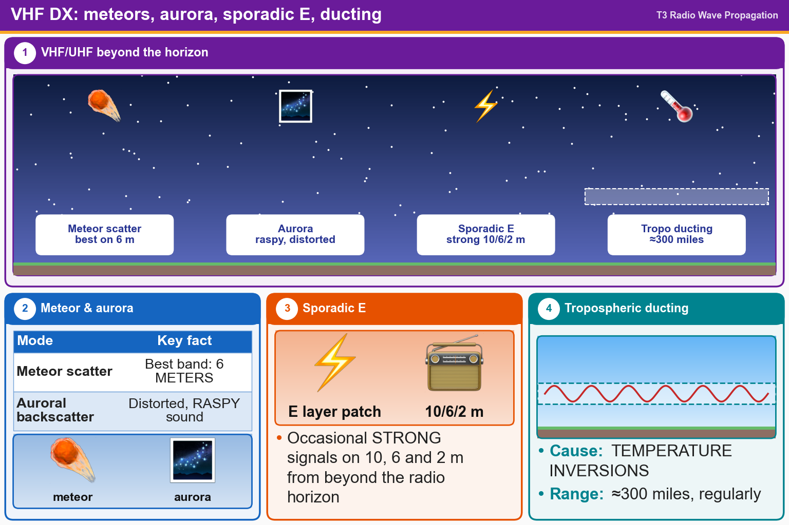

💡 Meteor = 6 m. Aurora = raspy. Sporadic E = strong 10/6/2 m. Ducting = temperature inversion, ~300 mi.
Pick an answer for each question, then press Grade at the bottom.
T3C07
What band is best suited for communicating via meteor scatter?
✘A.70 centimeters
✘B.33 centimeters
✔C.6 meters
✘D.2 meters
T3C03
What is one characteristic of VHF signals received via auroral backscatter?
✔A.They are distorted, with a characteristic raspy sound
✘B.They are generally strongest when your antenna is aimed west
✘C.They occur only during winter nighttime hours
✘D.They are often received from 10,000 miles or more
T3C04
Which of the following types of propagation is most commonly associated with occasional strong signals on the 10-, 6-, and 2-meter bands from beyond the radio horizon?
✘A.Backscatter
✘B.D region absorption
✘C.Gray-line propagation
✔D.Sporadic E
T3C06
What type of propagation is responsible for allowing over-the-horizon VHF and UHF communications to ranges of approximately 300 miles on a regular basis?
✘A.D region refraction
✘B.F2 region refraction
✔C.Tropospheric ducting
✘D.Faraday rotation
T3C08
What causes tropospheric ducting?
✘A.Discharges of lightning during electrical storms
✘B.Sunspots and solar flares
✔C.Temperature inversions in the atmosphere
✘D.Updrafts from hurricanes and tornadoes